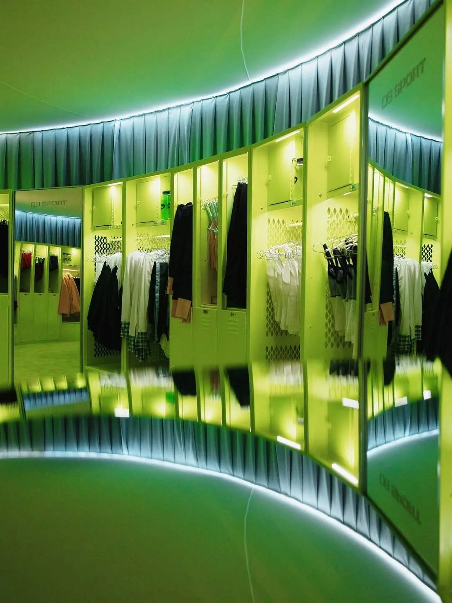
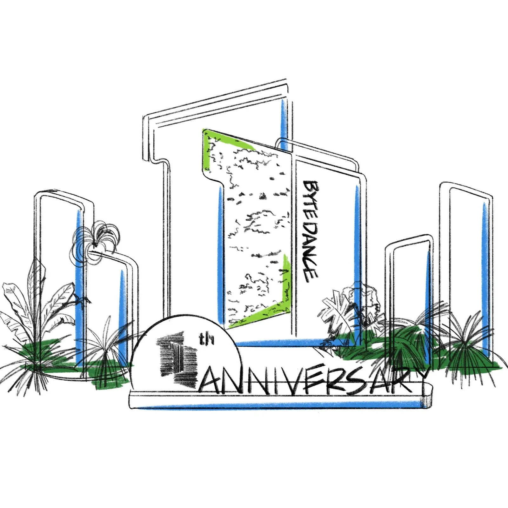

BAM Media Group
Independent web and AI systems builder
I build the parts of a business people actually touch: the website, the AI-assisted follow-up, the admin layer, and the launch system holding it together.
Website build
A custom site shaped around one job: explain the offer, prove trust, capture demand, and make follow-up easier.

Case files
The work spans social growth, music, experiential production, CMS content, and server operations. The common thread is turning scattered material into something clear, fast, and useful.
BAM Media Group

Jack Kleinick

PARTI
Instacraft
The difference
Build map
The best projects do not split design, automation, and operations into separate conversations. They become one build plan.
Premium marketing site, landing page, portfolio, or service site with deployment and SEO fundamentals.
Automate repetitive lead, content, support, reporting, scheduling, or admin work.
Website, AI assistant, lead capture, dashboard, analytics, and handoff logic in one connected build.
Give the team a clearer place to manage content, leads, status, or reporting.
Monthly improvements, QA, automation tuning, content updates, and new experiments.
Start rough
Share the current site, the business problem, the workflow that wastes time, or the launch you need to make real. I will help turn it into a concrete build path.